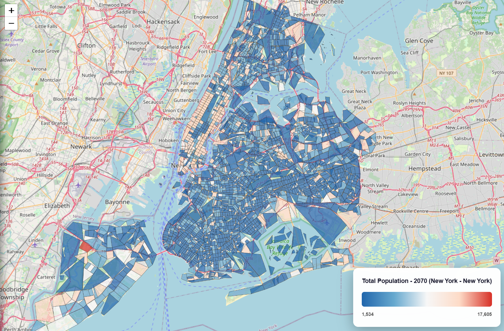
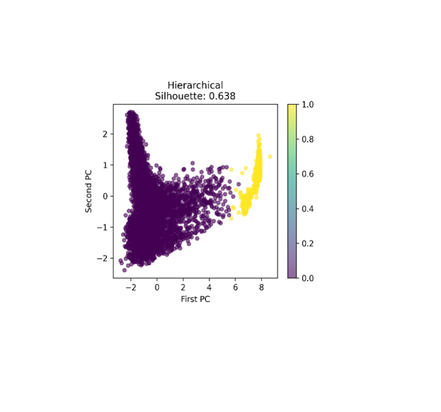
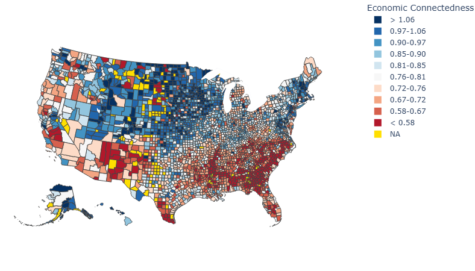
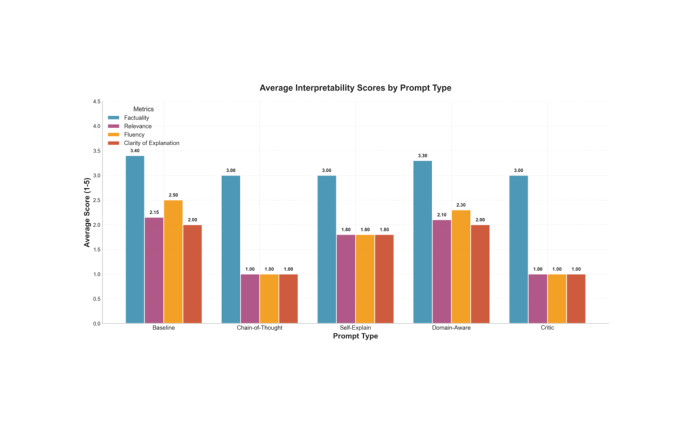
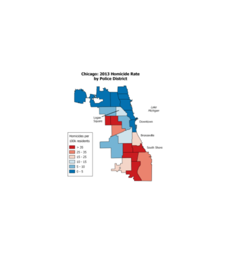
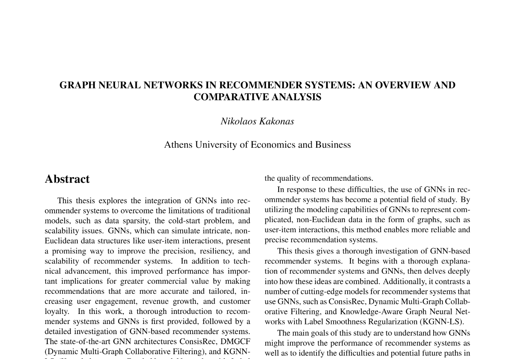
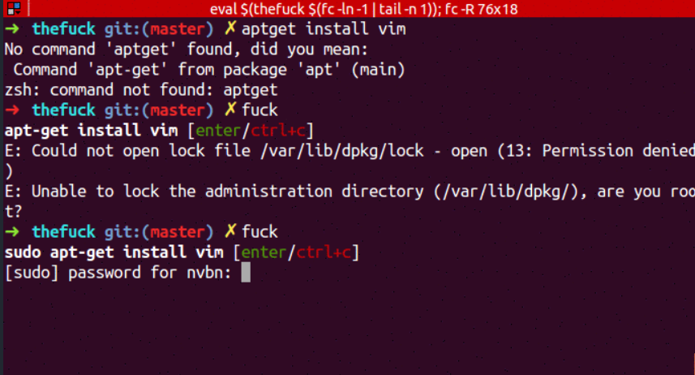
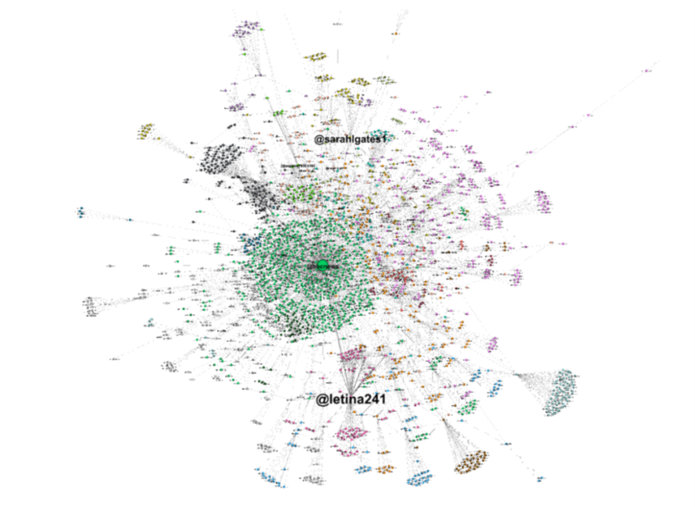

AI Engineer & Data Scientist
M.S. Computer Science @ Georgia Tech | AI Engineer @ Geotab
Atlanta, GA | kakonas.nikos@gmail.com
I’m a data scientist and machine learning engineer who enjoys building AI systems that solve real problems and actually get used. I’ve worked at Ernst & Young and studied analytics at Georgia Tech, focusing on applied machine learning.
I design end-to-end ML solutions, from LLM-powered tools and regression models to large-scale data pipelines, that automate decisions, improve model performance, and reduce operational costs. My work has helped teams move faster, rely less on manual analysis, and make data-driven decisions at scale.
Geotab | Atlanta, GA
Georgia Institute of Technology
Ernst & Young (EY)
Ernst & Young (EY)








Georgia Institute of Technology | GPA: 3.8
Coursework: Machine Learning, Deep Learning, Conversational AI, Data and Visual Analytics
Athens University of Economics and Business | GPA: 8.51/10
Major: Software Engineering and Data Science
Minor: Operation Research and Business Analytics
Coursework: Applied Machine Learning, Business Intelligence and Big Data Analytics, Database Systems, Social Network Analysis